Encuentros Presenciales
Encuentro 1
Fecha 📅 Martes 17/10/2023 Primer día de clases, pauta introductoria al semestre y a los montajes que se realizarán. ⁃ Se conversó sobre varios temas, entre ellos: Montaje ECOS DEL PASADO - Ballet. Montaje ABYA YALA, Método Laban, Vestuarios, tareas divididas por unidad curricular, grupo estable de danza contemporánea, trabajos individuales y grupales. ⁃ Organización y confirmación de horarios y lugares de clase. ⁃ También se establecieron inquietudes de los profesores y de los alumnos, para una mejoría del grupo, aprendizaje y rendimiento.
Encuentro 2
Fecha 📅 Miércoles 25/10/2023 Segundo encuentro de clases, teórica-práctica, e iniciación al Método Laban y la historia del Abya yala. Se realizaron actividades como: ⁃ Discusión socializada sobre el método laban, su concepto, el porqué es un método y no una técnica y como podemos aplicarlo al montaje final. ⁃ Discusión socializada sobre el ABYA YALA, el término, de donde proviene, sus significados, porqué es nuestro y cómo vincularlo al montaje final. ⁃ Demostración práctica de indicios básicos del método laban a través de las 4 etapas del calentamiento. ⁃ Intro del montaje ABYA YALA, a través de las directrices dadas por el profesor sobre el método laban. ⁃ Presentación de las piezas musicales que serán utilizadas para realizar el montaje final.
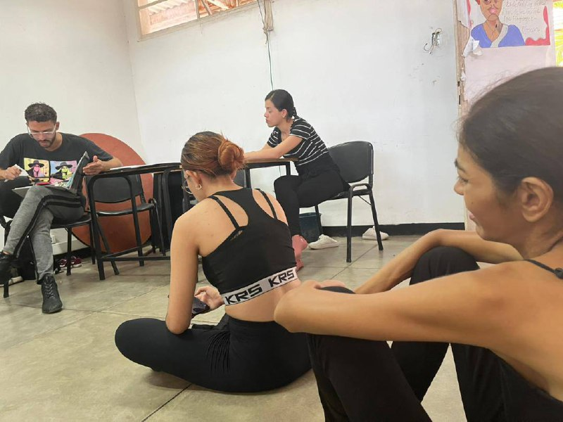 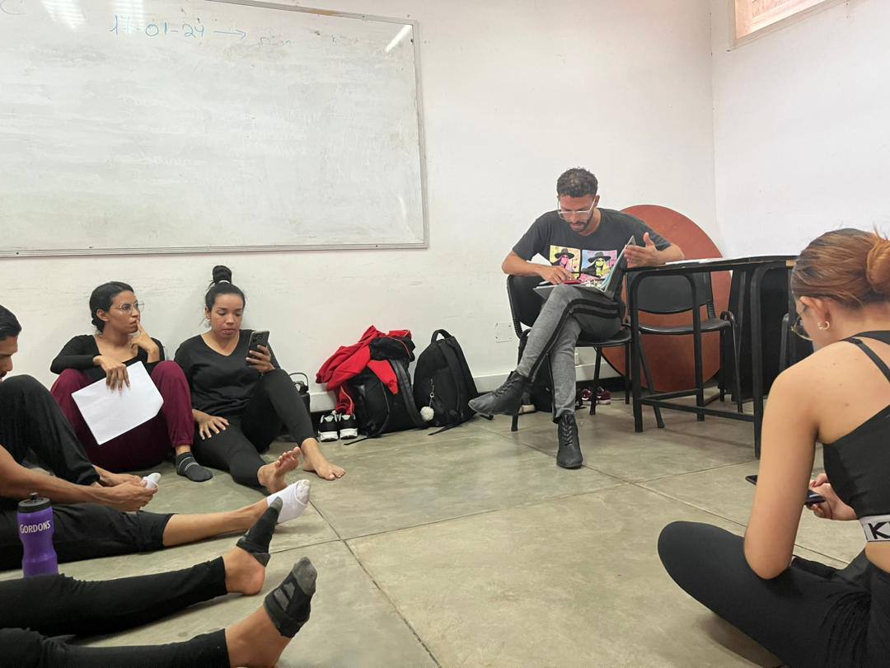Encuentro 3
Fecha 📅 Miércoles 01/11/2023 Encuentro en el cual se desarrolló la primera clase del cronograma de clases sobre el método laban, dictada por Jesús Yemez. En esta se resaltaron aspectos como: Las 4 fases del calentamiento, combinado con las acciones del método laban, aparte de ello se realizó parte del montaje de Abya Yala, con las secuencias de 48 tiempos de José Díaz, Yetsibel Alcalá, Inés Sánchez, Junnialys Velásquez y Juan Arteaga, dando así inicio a la composición colectiva del montaje final para Ecos del Pasado Contemporáneo.
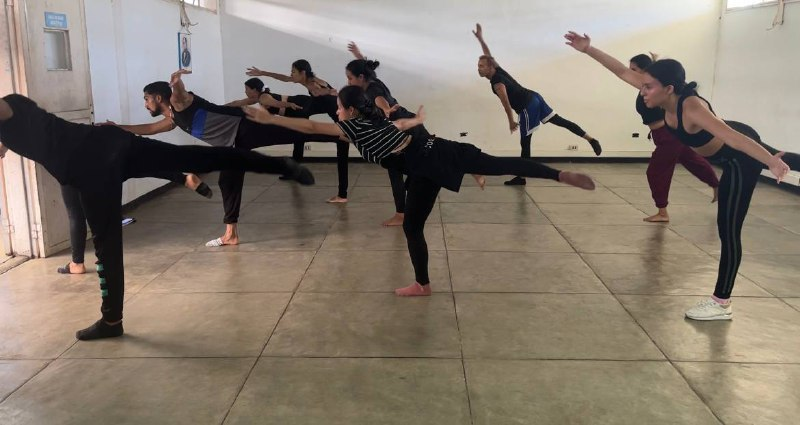 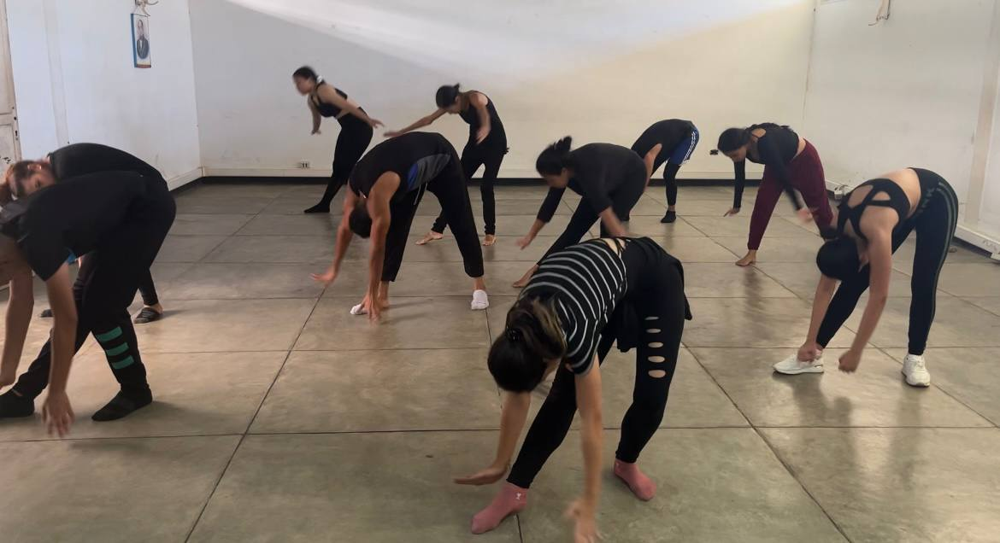 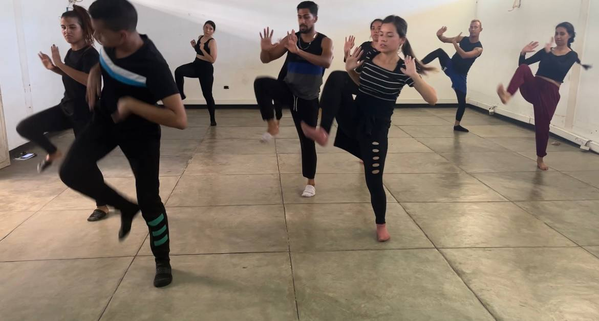Encuentro 4
Fecha 📅 Jueves 11/01/2024 Tercer encuentro, y primer encuentro en el año. En este encuentro se conversó sobre el taller teórico práctico Abya Yala, y sobre el montaje en el cual se empezaron a dividir responsabilidades para la creación de las piezas. En este encuentro se creó uno de los actos en composición colectiva, en el cual participaron Mariangel Blanco, Carmen Aristimuño, Jesús Yemez, José Díaz, Franciannys Frontado y Rosangel González.
Encuentro 5
Fecha 📅 Jueves 25/01/2024 En este encuentro correspondió la realización de la clase de Carmen Aristimuño sobre el método laban, en la cual se tocaron temas como la kinesfera (planos y ejes del cuerpo) las 8 acciones del método y sus 7 aplicaciones en la danza. La clase se describió como muy buena y nutritiva.
Encuentro 6
Fecha 📅 Jueves 01/02/2024 En este encuentro se habló un poco sobre el taller teórico práctico y las asignaciones del seminario, el profesor asesoró a los que presentaban dudas y se llegó a un acuerdo con respecto a una técnica a utilizar en el maquillaje de Abya Yala conocida como la “Mola”. Luego se realizó la clase pautada para ese día que fue dirigida por Inés Sánchez, la cual se basó más que todo en las 4 fases del calentamiento, y en el desarrollo del método laban, sus 8 esfuerzos. Durante la clase el profesor hizo preguntas sobre la descripción de cada movimiento, de acuerdo a sus 7 aplicaciones en la danza y a los planos, ejes y direcciones.
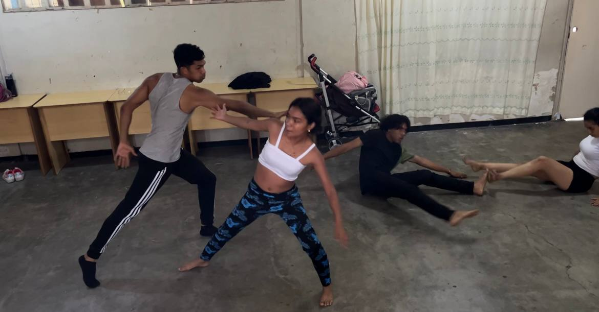 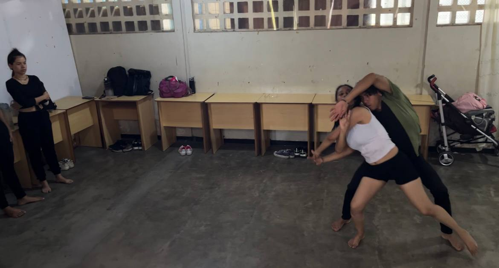 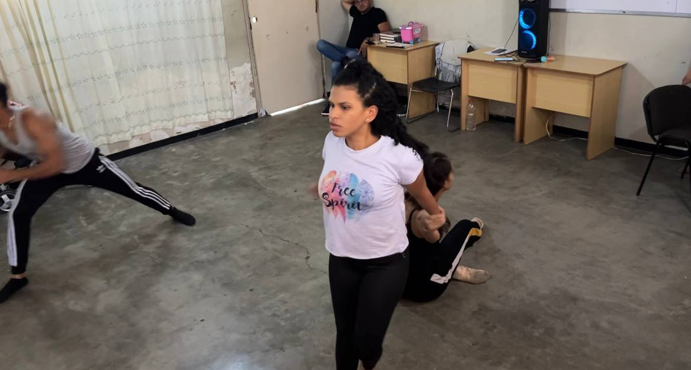Encuentro 7
Fecha 📅 Jueves 15/02/2024 En este encuentro se habló sobre las asignaciones del seminario, se tocó el tema del vestuario y las piezas culminadas hasta ahora. Luego se llevó a cabo la clase de Dannibel Correa y Franciannys Frontado sobre el método laban, en la cual trabajaron ambas clases en conjunto. Luego se realizó parte del montaje con secuencias llevadas por ellas, se describieron los movimientos a realizar y se adaptó junto con otra secuencia realizada la clase anterior. Al final se recordaron las piezas ya montadas.
Encuentro 8
Fecha 📅 Jueves 22/02/2024 En este encuentro se habló sobre las asignaciones del seminario al ya ser el ultimo encuentro de clases del lapso. Se presentaron las propuestas de vestuario en proceso y se consignaron los avances de las asignaciones correspondientes. Se realizo la clase del Metodo Laban con las alumnas Keidy Garcia, Francisca Rodriguez, Romelys Gil, Yetsibel Alcala y Anaysa Sayago, la cual la dieron de una forma muy dinamica. Para finalizar con el montaje de la pieza de intro de ABYA YALA y el intro de la pieza moderna, y en ensayo de los cuadros ya terminados.
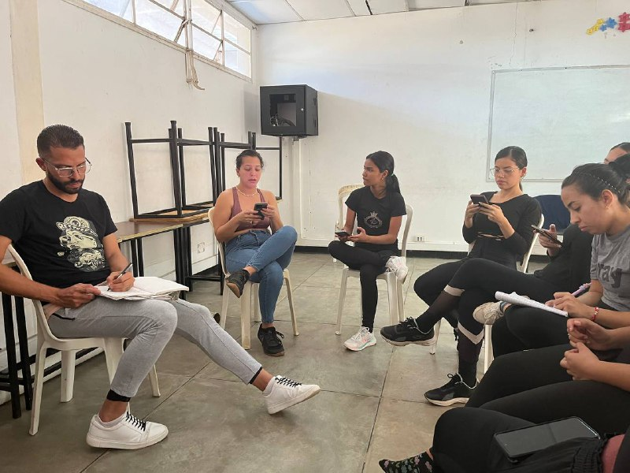 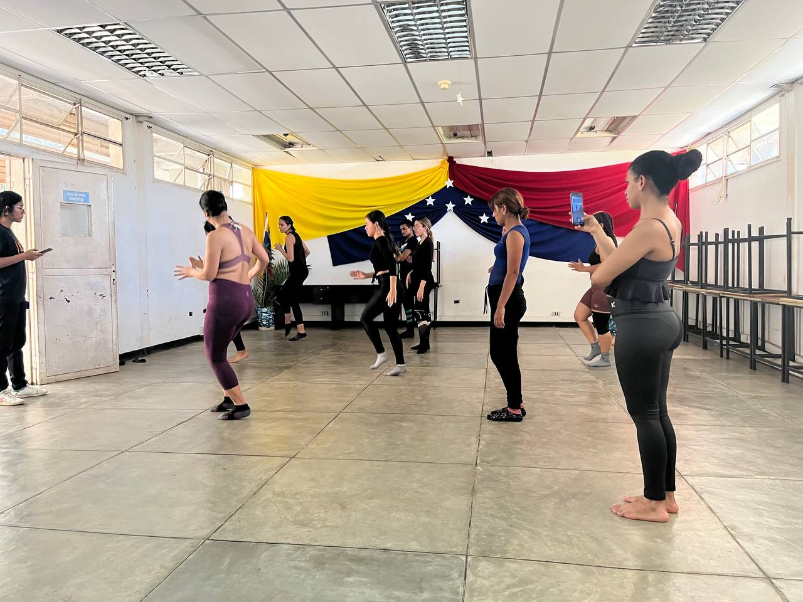 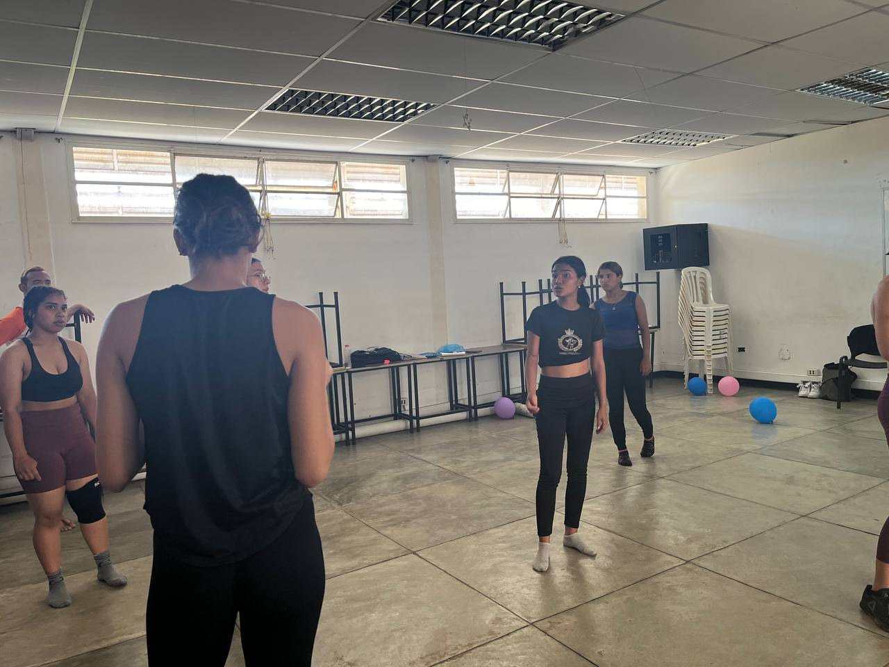